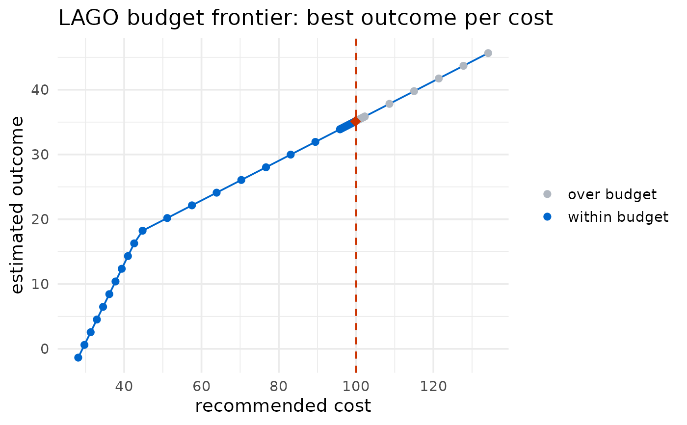

Answers the reverse of the usual LAGO question. Instead of "what is the least costly intervention that reaches an outcome goal?" ([lago_optimization()]), `lago_budget()` asks "given a fixed budget, what is the best outcome I can reach, and with which intervention?".
The best-outcome-within-budget intervention always lies on the same least-cost frontier that [lago_optimization()] traces out (for any target outcome, the cheapest way to reach it is what the optimizer already finds), so `lago_budget()` sweeps the outcome goal across the outcome's range with [lago_sensitivity()], reads the recommended cost and estimated outcome at each goal, and returns the reachable goal whose recommended cost is highest without exceeding the budget (for `outcome_goal_intention = "maximize"`; the lowest reachable outcome within budget for `"minimize"`). It does not touch the optimizer internals, so it inherits the same model, cost functions and bounds.
Arguments
- object
An optional `lago` result from [lago_optimization()]. When supplied, the baseline optimization arguments are read from the call it carries, so the whole call need not be retyped, and anything in `...` overrides those stored values. When `NULL` (the default), the baseline arguments come from `...`. Passing a non-`lago` object, or a `lago` result from a version that did not record its call arguments, is an error.
- ...
The baseline [lago_optimization()] arguments (the user's own optimization call), forwarded unchanged to every run. `outcome_goal` is swept and so need not be supplied; `include_confidence_set` and `quiet` are overridden (the confidence set is never computed during the search).
- budget
A single positive, finite numeric value. The maximum total cost allowed, in the same units as the supplied `cost_list_of_vectors` (or `unit_costs`).
- n_grid
A single integer (>= 2) giving how many outcome goals to try across the outcome's range. Larger values give a finer, more precise answer at the cost of more optimization runs. A second refinement pass is run around the affordability boundary, so the effective resolution is finer than `n_grid` alone. Default 25.
- quiet
A boolean forwarded to [lago_optimization()] via [lago_sensitivity()]. Defaults to `TRUE` so the search is not noisy.
Value
An object of class `"lago_budget"`, a list with:
- budget
The supplied budget.
- feasible
`TRUE` if at least one reachable intervention was affordable.
- binding
`TRUE` if the budget constrained the choice: a strictly better outcome was reachable but cost more than the budget. `FALSE` if the best reachable outcome was already affordable.
- rec_int
The recommended intervention (one value per component), or `NA` when not `feasible`.
- rec_int_cost
Its cost (at most `budget`), or `NA`.
- est_outcome
Its estimated outcome, or `NA`.
- outcome_goal
The outcome goal that produced the recommendation (equal to `est_outcome` up to the grid resolution), or `NA`.
- frontier
A `data.frame` of the reachable goals searched (the cost/outcome tradeoff curve): `outcome_goal`, `rec_int_cost`, `est_outcome`, `affordable`, `status`.
- component_names
The intervention component names.
- intention
The `outcome_goal_intention` used.
Details
The candidate outcome goals span the outcome's range: `(0, 1)` for a binary outcome, or the observed range of the outcome column (padded by half a span on each side) for a continuous one. Each goal is one [lago_optimization()] run with the confidence set off. A goal beyond the reachable range does not error: the optimizer's shrinking method returns a recommendation whose estimated outcome falls short of the goal, so such a goal is not counted as genuinely reached and does not become a candidate (only goals the recommendation actually delivers are considered). Among the reached goals whose recommended cost is at most `budget`, the one with the best estimated outcome is chosen (largest for `"maximize"`, smallest for `"minimize"`). The grid is extended in the improving direction until goals stop being reached or affordable, and a refinement sweep is then run near the affordability boundary to tighten the estimate.
If no reachable goal is affordable (the budget is below the cost of even the cheapest reachable intervention), the result has `feasible = FALSE` and `NA` recommendation fields. If every reachable goal is affordable, the budget does not bind (`binding = FALSE`) and the maximum reachable outcome is returned.
See also
[lago_optimization()], [lago_sensitivity()]
Other LAGO functions:
get_confidence_set(),
lago_optimization(),
lago_report(),
lago_sensitivity(),
visualize_cost()
Examples
# \donttest{
# How good an outcome can a budget of 100 buy? (mtcars, continuous.)
b <- lago_budget(
data = mtcars,
outcome_name = "mpg",
outcome_type = "continuous",
glm_family = "gaussian",
link = "identity",
intervention_components = c("gear", "qsec"),
intervention_lower_bounds = c(0, 0),
intervention_upper_bounds = c(10, 350),
cost_list_of_vectors = list(c(0, 4), c(4, 6)),
outcome_goal_intention = "maximize",
budget = 100
)
b
#>
#> ── LAGO budget-constrained optimization ──
#>
#> Budget: 100 (maximize).
#> Recommended intervention: gear = 10.000000, qsec = 9.307224
#> Cost: 99.8433458625911 (of 100).
#> Estimated outcome: 35.1239581327576.
plot(b)

# Reuse a fitted result's call instead of retyping it.
opt <- lago_optimization(
data = mtcars, outcome_name = "mpg", outcome_type = "continuous",
glm_family = "gaussian", link = "identity",
intervention_components = c("gear", "qsec"),
intervention_lower_bounds = c(0, 0),
intervention_upper_bounds = c(10, 350),
cost_list_of_vectors = list(c(0, 4), c(4, 6)),
outcome_goal = 30, outcome_goal_intention = "maximize",
include_confidence_set = FALSE, quiet = TRUE
)
lago_budget(opt, budget = 100)
#>
#> ── LAGO budget-constrained optimization ──
#>
#> Budget: 100 (maximize).
#> Recommended intervention: gear = 10.000000, qsec = 9.307224
#> Cost: 99.8433458625911 (of 100).
#> Estimated outcome: 35.1239581327576.
# }